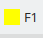
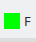
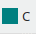
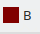
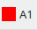
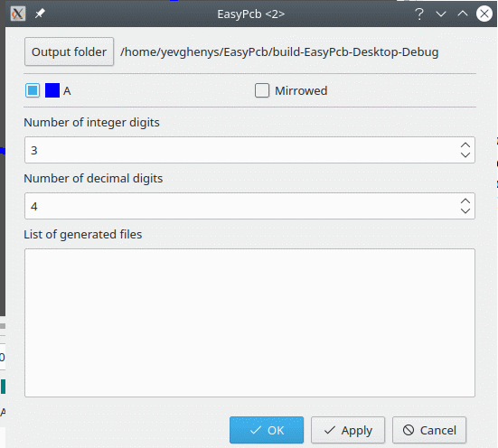
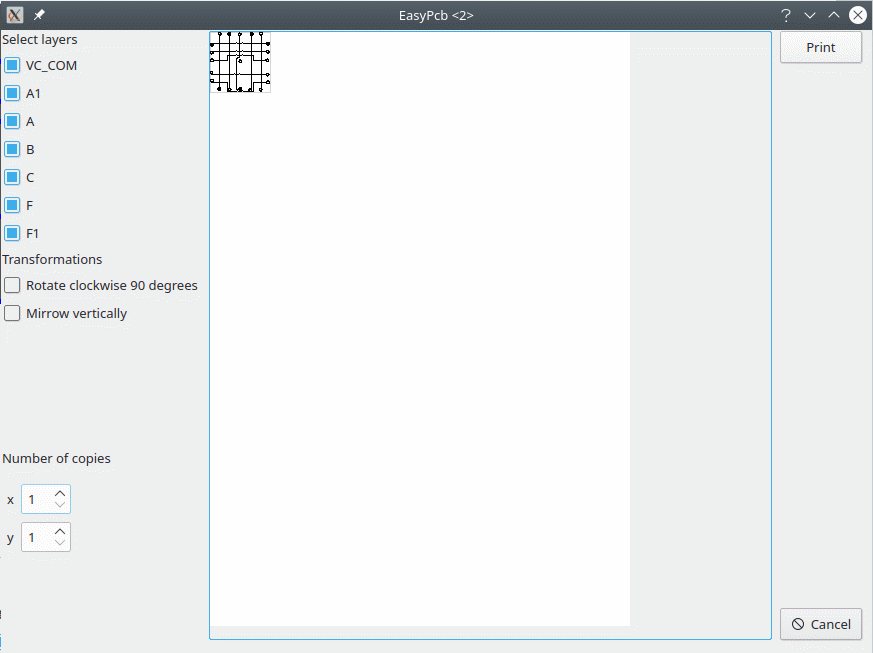
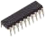
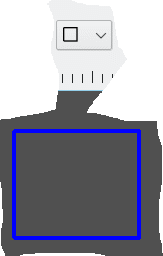

EasyPcb is a simple application that can help to create simple PCBs. Each PCB consists of layers where the metalic connections are created. EasyPcb uses the following layers

|
This is a package layer i.e. on this layer the bodies of electric elements are drawn not physical connections. |

|
This is a bottom physical connections layer i.e on this layer connections may be drawn. |

|
This is a mid physical connection layer. This layer should not be used for one-sided or double sided PCBs |

|
T his is a mid physical connection layer. This layer should not be used for one-sided or double sided PCBs |
|
This is a top physical connections layer i.e on this layer connections may be drawn. |

|
T his is a package layer i.e. on this layer the bodies of electric elements are drawn not physical connections. |
|
This is schematic connections layer. See more about this Schematic connection |
Creates new empty PCB design document.
Opens saved earlier PCB design document.
Saves current PCB design. When current design have not been earlier «save as» dialog is shown.
Shows «save as» dialog and saves current design under a given name.
Exports current design to a gerber file. Before processing current design a dialog of output file main properties is displayed. In this dialog the user can select which layer of PCB is needed to be exported and whether this layer should be exported mirrowed. In addition the user may select output folder and precision of coordinates in this file. The name of the output file is created according to the following rule <name of design>_<name of layer>_<current time in ms>.gbr

Exports current design into excellon file. Before export a dialog is displayed where the user may select a name for the output file.
Prints current design.Before printing the following dialog is displayed:

In this dialog the user may select which layers should be printed, whether the image should be mirrowed or rotated. In addition the user may select the number of copies printed on the page of a4.
E xits application.
xits application.
Cuts selected items into buffer.
 Copies
selected items into buffer.
Copies
selected items into buffer.
 Pastes
items from buffer into the current design.
Pastes
items from buffer into the current design.
Rollbacks the previous operation. Not all operations can be undone. The following operations cannot be rollbacked:
Executes again operation rollbacked via «Undo»
In this mode a user can select and move items.
In this mode user can drow physical connectors i.e. connectors that will be printed on PCB.
In this mode the user can link different elements of a design with schematic connection i.e. the same as in electrical schemes. These connections are used in «Auto» mode. To link two objects in this mode place the mouse over the one of them ,verify the center of the object is painted with VC_CON layer color and click left button. Then place the mouse over the second object verify that the center of the object is painted with VC_CON color and click left button again. To finish click right button of the mouse. At the moment EasyPcb supports linking of two objects only ,but the user can paint connection with medium points that are not linked to any of the object.
The following objects support linking :
Increases size of the working area and objects in this area. Each click doubles the objects and working area.
Decreases twice the size of the working area and objects in this area.
Measures distance between two object.To measure distance it is needed to place the mouse over the one of the objects, press left button and holding it place the mouse over the second object.
Measures distance between 2 linked objects. The user can link two objects in this mode and see distance constantly after linking i. e. the user can link objects in this mode and after that to move any of the objects and in this case see how the distance between objects is changing. To cancel this mode click the toolbar button for the mode again. See more how to link two objects in Schematic connection
Loads background image for the current design. It may be useful when the user has a picture of a Pcb design and wants to use this design as a template for the new design. In order to be displayed correctly the image should comply with the following requirements:
 Cleans
background image loaded with <Load image> command.
Cleans
background image loaded with <Load image> command.
This is the most interesting feature of this application. The user can place components on the board connect them with Schematic connection and use this feature to construct physical connectors
berween components.
 This wizard creates DIP or SMD chip using geometry data (size of package,the number if pins etc.) including pins’ names. Using this wizard the user easily create components of the library.
PCB consistrs of basic objects i.e. connectors , connecting plates ,packages etc. . Other PCB objects may have these objects as a base(for instance chips). EasyPcb may drow the following objects
This object is a simple round shape. It has a hole. User may draw such objects using list in the tool bar. After selecting user need to click in the drawing area to place as many objects as it is needed. To cancel drawing user need to click «Select» button in the toolbar. Status bar shows current geometry properties of the objects. These properties may be changed.
This object is a simple recangular shape. User may draw such objects using list in the tool bar. After selecting user need to click in the drawing area to place as many objects as it is needed. To cancel drawing user need to click «Select» button in the toolbar.Status bar shows current geometry properties of the objects. These properties may be changed.
 This object is a simple recangular . User may draw such objects using list in the tool bar. After selecting user need to click in the drawing area and holding the button draw rectangular.
This is identical to the 3.3 with the difference that in this case a circle is drawn
Connector that connects different layers on PCB. Consists of 2 simple round plates and metallized hole. The drawing is identical to 3.1, 3.2.
 This object is a simple recangular . Drawing is identical to 3.3
This object is a simple recangular . Drawing is identical to 3.3
This object is a simple text. User may select font size of a text.